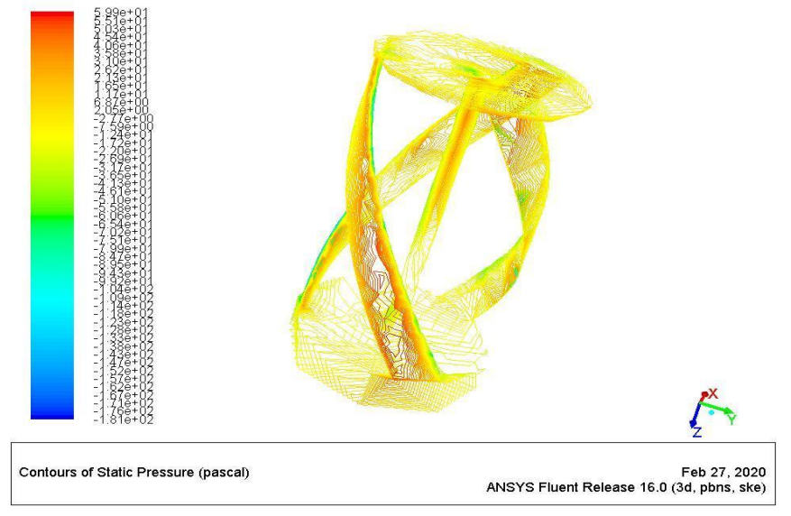
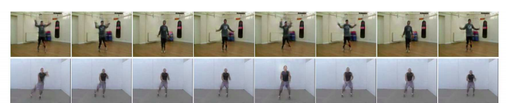

|
Abhinav Sagar
Email: abhinavsagar4 at gmail dot com
Address: 64 Greens Radius Developers, Santacruz, Mumbai, India
Hi! I just completed my undergrad at VIT Vellore.
My research areas are generative models like GANs, VAEs
on the theoretical side and medical imaging, autonomous driving etc on the application side.
More broadly, I am interested in deep learning and computer vision.
The communities I follow are NeurIPS, ICLR, CVPR, ICCV, ECCV, MICCAI, MIDL and WACV.
If you are interested in doing a research collaboration, please contact me.
Besides research, I enjoy travelling, playing guitar and cooking (also eating).
1. Efficient neural network architectures
2. Solving partial differential equations using neural networks
3. Uncertainty quantification for neural networks
Applied
1. Generative models for image/video generation
2. Medical image segmentation
3. 3D object detection
4. Modelling flow using Computational fluid dynamics
5. Stock market/cryptocurrency price prediction
6. Drug discovery/molecule generation
Bachelor's thesis
Thesis |
CAD Model

Research Papers and Preprints
Generate High Resolution Images With Generative
Variational Autoencoder
Paper |
Code

Uncertainty Quantification using Variational
Inference for Biomedical Image Segmentation
Paper |
Code

Semantic Segmentation With Multi Scale Spatial
Attention For Self Driving Cars
Paper |
Code

Bayesian Multi Scale Neural Network for Crowd
Counting
Paper |
Code

RUHSNet: 3D Object Detection Using Lidar Data in
Real Time
Paper |
Code

HRVGAN: High Resolution Video Generation using
Spatio-Temporal GAN
Paper |
Code

Monocular Depth Estimation Using Multi Scale
Neural Network And Feature Fusion
Paper |
Code

Generate Novel Molecules With Target Properties
Using Conditional Generative Models
Paper |
Code

|
{kind=link}